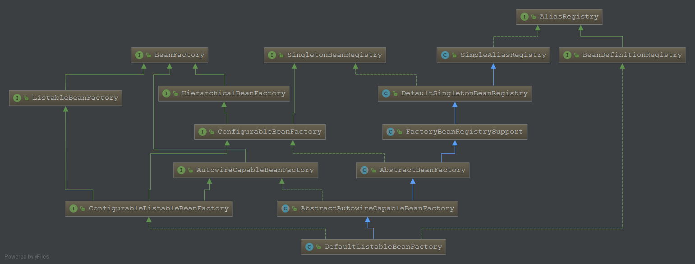
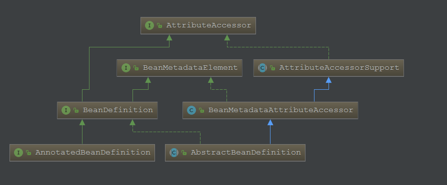

注意：该随笔内容完全引自https://blog.csdn.net/u014634338/article/details/82865644，写的很好，非常感谢，复制过来算是个积累，怕以后找不到。
BeanFactory提供的是最基本的IOC容器的功能，BeanFactory 只是一个接口类，并没有给出容器的具体实现，当然，它有不同的实现类，来定义或者扩充某个功能。这篇文章的主角就是它啦。
下面是一段简单的代码，通过编程启动IOC 容器：
public void TestDefaultListableBeanFactory(){
ClassPathResource resource = new ClassPathResource("spring.xml");
DefaultListableBeanFactory factory = new DefaultListableBeanFactory();
XmlBeanDefinitionReader reader = new XmlBeanDefinitionReader(factory);
reader.loadBeanDefinitions(resource);
MyBean bean = factory.getBean(MyBean.class);
System.out.println(bean.toString());
}spring.xml 配置文件里面很简单:
<bean id="myBean" class="com.study.spring.bean.MyBean" />这样，我们就可以通过factory对象来使用DefaultListableBeanFactory 这个IOC容器了，在使用IOC容器时，需要如下步骤：
1）创建IOC配置文件的抽象资源，即配置文件
2）创建一个BeanFactory,这里使用DefaultListableBeanFactory
3）创建一个载入BeanDefinition的读取器，这里使用XmlBeanDefinitionReader 来载入XML文件形式的BeanDefinition。
4）从定义好的资源位置读取配置信息，具体的解析过程由XmlBeanDefinitionReader 来完成。
通过一个简短的代码就可以启动spring，核心就在于DefaultListableBeanFactory，暂时就不直接跟踪流程了，还是来看看整个BeanFactory的设计。
BeanFactory，从名字上也很好理解，生产管理 bean 的工厂（容器），它负责生产和管理各个 bean 实例。
我们来看下和 BeanFactory 接口相关的主要的继承结构：

上面的继承关系去除了目前不需要的类。
emmmmm,这图看着有点头大，慢慢来，先主要关注左边部分，梳理一下各个BeanFactory的职能，怎么梳理?,看源码咯。
BeanFactory 是顶级接口，定义了IOC容器最基本的形式。
public interface BeanFactory {
//这里可以暂时不用管
String FACTORY_BEAN_PREFIX = "&";
Object getBean(String name) throws BeansException;
... //省略其它方法
}定义了一些基本接口,例如 获取bean，当然还有一些其它接口，这里就不列出了，需要自己去了解一下。
至于 FACTORY_BEAN_PREFIX 这个其实在这里可以忽略，这里还是简单提一下，如果不明白也无妨，与BeanFactory很相似的有一个叫FactoryBean的类，从名字上很容易混淆，BeanFactory 首先是Factoyr,而FactoryBean 是bean，只是 是一种特殊的bean, 这种特殊的bean会生产另一种bean, 对于普通的bean,通过BeanFactory 的 getBean方法可以获取这个bean,而对于FactoryBean 来说，通过getBean 获得的是 FactoryBean 生产的bean,而不是FactoryBean 本身，如果想要获取FactoryBean 本身，那么可以加前缀&，那么spring 就明白，原来你是需要FactoryBean 。这个可能会在后面AOP的部分，展开来讲，这里就先说这么多了。
public interface ListableBeanFactory extends BeanFactory {
// 对于给定的名字是否含有BeanDefinition
boolean containsBeanDefinition(String beanName);
// 返回工厂的BeanDefinition总数
int getBeanDefinitionCount();
// 返回工厂中所有Bean的名字
String[] getBeanDefinitionNames();
// 返回对于指定类型 获取bean的名字
String[] getBeanNamesForType(ResolvableType type);
//获取包含某个注解 bean的名字
String[] getBeanNamesForAnnotation(Class<? extends Annotation> annotationType);
// 根据指定Bean名和注解类型查找指定的Bean
<A extends Annotation> A findAnnotationOnBean(String beanName, Class<A> annotationType)
throws NoSuchBeanDefinitionException;
}public interface HierarchicalBeanFactory extends BeanFactory {
BeanFactory getParentBeanFactory();
/**
* Return whether the local bean factory contains a bean of the given name,
* ignoring beans defined in ancestor contexts.
* <p>This is an alternative to {@code containsBean}, ignoring a bean
* of the given name from an ancestor bean factory.
*/
boolean containsLocalBean(String name);
}分层式的BeanFactory，这个工厂接口非常简单，实现了Bean工厂的分层。相对于BeanFactory接口，它只扩展了一个重要的功能——工厂分层，可以指定父工厂（容器），同时查找bean的时候，可以只查找本容器，忽略父容器。
public interface AutowireCapableBeanFactory extends BeanFactory {
// 这个常量表明工厂没有自动装配的Bean
int AUTOWIRE_NO = 0;
//表明根据名称自动装配
int AUTOWIRE_BY_NAME = 1;
//表明根据类型自动装配
int AUTOWIRE_BY_TYPE = 2;
//表明根据构造方法装配
int AUTOWIRE_CONSTRUCTOR = 3;
//被废弃了
@Deprecated
int AUTOWIRE_AUTODETECT = 4;
<T> T createBean(Class<T> beanClass) throws BeansException;
// 给定对象，根据注释、后处理器等，进行自动装配
void autowireBean(Object existingBean) throws BeansException;
...//省略后续方法
}AutowireCapableBeanFactory 目前还没有深入的研究，这个BeanFactory 增加了注解功能，可以通过注解进行装配（操作）的工厂（容器）。
上面三个 Factory 是 BeanFactory 接口的直系亲属，三种不同样式的BeanFactory ，分层容器，可列举(查询)容器，自动装配容器，职能单一原则，这种接口设计，应该平常工作中经常遇到吧。
接下来在看看其它更多样化的 BeanFactory 。
public interface ConfigurableBeanFactory extends HierarchicalBeanFactory, SingletonBeanRegistry {
String SCOPE_SINGLETON = "singleton";
String SCOPE_PROTOTYPE = "prototype";
//设置父容器
void setParentBeanFactory(BeanFactory parentBeanFactory) throws IllegalStateException;
void setBeanClassLoader(ClassLoader beanClassLoader);
ClassLoader getBeanClassLoader();
void setBeanExpressionResolver(@Nullable BeanExpressionResolver resolver);
BeanExpressionResolver getBeanExpressionResolver();
/*
* 设置 转换服务
*/
void setConversionService(ConversionService conversionService);
ConversionService getConversionService();
void addPropertyEditorRegistrar(PropertyEditorRegistrar registrar);
/*
* 注册属性编辑器
*/
void registerCustomEditor(Class<?> requiredType, Class<? extends PropertyEditor> propertyEditorClass);
void copyRegisteredEditorsTo(PropertyEditorRegistry registry);
void setTypeConverter(TypeConverter typeConverter);
TypeConverter getTypeConverter();
//设置一个Bean后处理器
void addBeanPostProcessor(BeanPostProcessor beanPostProcessor);
int getBeanPostProcessorCount();
void registerScope(String scopeName, Scope scope);
String[] getRegisteredScopeNames();
Scope getRegisteredScope(String scopeName);
void copyConfigurationFrom(ConfigurableBeanFactory otherFactory);
/*
* 给指定的Bean注册别名
*/
void registerAlias(String beanName, String alias) throws BeanDefinitionStoreException;
BeanDefinition getMergedBeanDefinition(String beanName) throws NoSuchBeanDefinitionException;
//判断指定Bean是否为一个工厂Bean
boolean isFactoryBean(String name) throws NoSuchBeanDefinitionException;
void setCurrentlyInCreation(String beanName, boolean inCreation);
boolean isCurrentlyInCreation(String beanName);
void registerDependentBean(String beanName, String dependentBeanName);
String[] getDependentBeans(String beanName);
String[] getDependenciesForBean(String beanName);
void destroyBean(String beanName, Object beanInstance);
void destroyScopedBean(String beanName);
void destroySingletons();
...//省略部分方法
}ConfigurableBeanFactory 继承了 HierarchicalBeanFactory，SingletonBeanRegistry
先看一下接口SingletonBeanRegistry的源码：
public interface SingletonBeanRegistry {
//注册一个单例类
void registerSingleton(String beanName, Object singletonObject);
Object getSingleton(String beanName);
boolean containsSingleton(String beanName);
String[] getSingletonNames();
int getSingletonCount();
//不清楚
Object getSingletonMutex();
}可以看到，SingletonBeanRegistry这个接口非常简单，实现了单例类注册的功能。
ConfigurableBeanFactory同时继承了HierarchicalBeanFactory 和 SingletonBeanRegistry 这两个接口，即同时继承了分层和单例类注册的功能。
ConfigurableBeanFactory 正如其名字一样，可以配置的BeanFactory，里面有很多接口方法，我也没有去细研究每一个方法，后面用到了，再来具体分析就可以了，了解了解，知道大概用处就可以了。
public interface ConfigurableListableBeanFactory
extends ListableBeanFactory, AutowireCapableBeanFactory, ConfigurableBeanFactory {
//忽略自动装配的依赖类型
void ignoreDependencyType(Class<?> type);
//忽略自动装配的接口
void ignoreDependencyInterface(Class<?> ifc);
//返回注册的Bean定义
BeanDefinition getBeanDefinition(String beanName) throws NoSuchBeanDefinitionException;
Iterator<String> getBeanNamesIterator();
...//忽略部分方法
}
工厂接口ConfigurableListableBeanFactory同时继承了3个接口，ListableBeanFactory、AutowireCapableBeanFactory 和 ConfigurableBeanFactory,可以说功能以及很全面了。
对于BeanFactory 体系中左边部分，大致差不多了，现在看看右半边情况
顾名思义，这个是注册 BeanDefinition的
public interface BeanDefinitionRegistry extends AliasRegistry {
//给定bean名称，注册一个新的bean定义
void registerBeanDefinition(String beanName, BeanDefinition beanDefinition)
throws BeanDefinitionStoreException;
//根据指定Bean名移除对应的Bean定义
void removeBeanDefinition(String beanName) throws NoSuchBeanDefinitionException;
根据指定bean名得到对应的Bean定义
BeanDefinition getBeanDefinition(String beanName) throws NoSuchBeanDefinitionException;
查找，指定的Bean名是否包含Bean定义
boolean containsBeanDefinition(String beanName);
//返回本容器内所有注册的Bean定义名称
String[] getBeanDefinitionNames();
//指定Bean名是否被注册过。
int getBeanDefinitionCount();
//指定Bean名是否被注册过。
boolean isBeanNameInUse(String beanName);
}
这个接口很简单，就是对BeanDefinition的操作，然而我们还没有了解BeanDefinition 的结构，但是并不影响我们分析，因为从名字就知道这个指代的是一个bean的定义，也就是将xml中的bean 翻译成了具体的数据结构。
现在回过头来，我们再看看DefaultListableBeanFactory类图
对于左边部分，则是各种功能的BeanFactory,右边部分则是对BeanDefinition的功能操作，中间部分则是单例Bean功能服务，中间部分我们没有分析源代码，但是通过名字我们已经很好的知道了它的功能，而FactoryBeanRegistrySupport 则表示了对 FactoryBean的支持，（FactoryBean在前面BeanFactory简单提了一下哟）
现在对每个BeanFactory的职能心里大概有谱了，这样在后面的时候，才知道这个功能属于哪个模块，而不至于脑袋一团浆糊。
对于DefaultListableBeanFactory 我们并没有取分析它，因为DefaultListableBeanFactory 中实现了上面接口中的所有方法，涉及了很多细节，从代码角度来看的话，那真的是很难一下分析透，但是如果从功能模块上来看的话，我们也知道了它大概可以干什么，可以说是一个比较成熟的容器了，既然现在我们知道了装bean的容器了，那么bean又从何处来呢，当然是xml，但是xml又如何转换成数据结构的呢，这个就需要回到我们最开的代码了：
public void TestDefaultListableBeanFactory(){
ClassPathResource resource = new ClassPathResource("spring.xml"); //3
DefaultListableBeanFactory factory = new DefaultListableBeanFactory(); //5
XmlBeanDefinitionReader reader = new XmlBeanDefinitionReader(factory);//7
reader.loadBeanDefinitions(resour ce);//9
MyBean bean = factory.getBean(MyBean.class); //11
System.out.println(bean.toString());
}
现在第5，11行代码我们已经大致清楚了，主要的还剩3,4,9行代码了，这个就先留到后面再来吧。
Bean的定义主要由BeanDefinition来描述的,作为Spring中用于包装Bean的数据结构,先来看看BeanDefinition一个继承结构吧(非完整继承结构)

一个BeanDefinition描述了一个bean的实例，包括属性值，构造方法参数值和继承自它的类的更多信息。
BeanDefinition 源码浅析
//标准单例作用域 标识符：“singleton”。
String SCOPE_SINGLETON = ConfigurableBeanFactory.SCOPE_SINGLETON;
//标准原型作用域的范围标识符：“prototype”。
String SCOPE_PROTOTYPE = ConfigurableBeanFactory.SCOPE_PROTOTYPE;
//表示BeanDefinition是应用程序主要部分的角色提示。 通常对应于用户定义的bean。
int ROLE_APPLICATION = 0;
//表示BeanDefinition是某些大型配置的支持部分的角色提示，通常是一个外部ComponentDefinition。
//当查看某个特定的ComponentDefinition时，认为bean非常重要，
//以便在查看应用程序的整体配置时能够意识到这一点。
int ROLE_SUPPORT = 1;
//角色提示表明一个BeanDefinition是提供一个完全背景的角色，并且与最终用户没有关系。
ROLE_SUPPORT =1实际上就是说，我这个Bean是用户的，是从配置文件中过来的。
ROLE_INFRASTRUCTURE = 2 就是说 这Bean是Spring自己的，
上面是BeanDifinition的一些基本属性信息，一个就是标识下当前Bean的作用域，另外就是标识一下这个Bean是内部的还是外部的。下面来看这个接口为其子类都提供了哪些具体的行为方法：
1.当前Bean的className get&set方法
//指定此bean定义的bean类名称。
//类名称可以在bean factory后期处理中修改，通常用它的解析变体替换原来的类名称。
void setBeanClassName(String beanClassName);
//返回此bean定义的当前bean类名称。
//需要注意的是，这不一定是在运行时使用的实际类名，以防子类定义覆盖/继承其父类的类名。
//此外，这可能只是调用工厂方法的类，或者它 在调用方法的工厂bean引用的情况下甚至可能是空的。
//因此，不要认为这是在运行时定义的bean类型，而只是将其用于在单独的bean定义级别进行解析。
String getBeanClassName();
2.Bean的作用域get&set方法
//覆盖此bean的目标范围，指定一个新的范围名称。
void setScope(String scope);
//返回此bean的当前目标作用域的名称，如果没有确定，返回null
String getScope();
3.懒加载的get&set方法
//设置这个bean是否应该被延迟初始化。如果{false}，那么这个bean将在启动时由bean工厂实例化，
//这些工厂执行单例的立即初始化。
//懒加载 <bean lazy-init="true/false">
void setLazyInit(boolean lazyInit);
//返回这个bean是否应该被延迟初始化，即不是在启动时立即实例化。只适用于单例bean。
boolean isLazyInit();
4.依赖关系设置
//设置这个bean依赖被初始化的bean的名字。 bean工厂将保证这些bean首先被初始化。
//<bean depends-on="">
void setDependsOn(String... dependsOn);
//返回这个bean依赖的bean名称。
String[] getDependsOn();
5.是否是自动转配设置
//设置这个bean是否是获得自动装配到其他bean的候选人。
//需要注意是，此标志旨在仅影响基于类型的自动装配。
//它不会影响按名称的显式引用，即使指定的bean没有标记为autowire候选，也可以解决这个问题。
//因此，如果名称匹配，通过名称的自动装配将注入一个bean。
void setAutowireCandidate(boolean autowireCandidate);
//返回这个bean是否是自动装配到其他bean的候选者。就是是否在其他类中使用autowired来注入当前Bean的
//是否为被自动装配 <bean autowire-candidate="true/false">
boolean isAutowireCandidate();
并没有完全列举 BeanDifinition 中的方法或者属性，大致明白 Bean的定义主要由BeanDefinition来描述的,作为Spring中用于包装Bean的数据结构就可以了，关于BeanDifinition 的更多接口实现，这个根据自己情况去看看就可以了。
了解了BeanFactory的大致结构后，来看看下面一段简单代码，相信理解就更加深刻了：
public void TestDefaultListableBeanFactory(){
DefaultListableBeanFactory factory = new DefaultListableBeanFactory();
AbstractBeanDefinition beanDefinition = new RootBeanDefinition(MyBean.class);
factory.registerBeanDefinition("myBean",beanDefinition);
//可以通过构造方法注入依赖,当然我们这里没有
//beanDefinition.setConstructorArgumentValues();
//可以通过 setter 方法注入依赖,当然我们这里也没有
//beanDefinition.setPropertyValues();
MyBean bean = factory.getBean(MyBean.class);
System.out.println(bean.toString());
}
在前面我们用的ClassPathResource,XmlBeanDefinitionReader 从文件中读取的bean配置信息，现在我们知道了BeanDifinition 以及BeanDefinitionRegistry，那么其实我们可以手动注册BeanDifinition ，这样我在最开始的代码基础上，又再次细分了功能了，层次也更加的清楚了。
我们从 DefaultListableBeanFactory 出发，大致了解了一下 BeanFactory的体系结构，BeanFactory有三个直系亲属：
ListableBeanFactory（可列举的容器（多花样查询）），HierarchicalBeanFactory（分层次容器，可有父容器），AutowireCapableBeanFactory（自动装配容器），这三个容器定义了BeanFactory的基本面貌，在这个三个直系亲属下面又派生了两个复杂的容器：ConfigurableBeanFactory，ConfigurableListableBeanFactory，可配置的（可操作）的容器，通过这两个BeanFactory 可有修改容器中的bean,功能又更加高级了，集成了单例bean 服务，以及BeanDefinition 注册服务，那么对于 DefaultListableBeanFactory 来说，此时它就是一个可注册，可配置，可获取的BeanFactory ，就容器方面而言功能已经健全了。